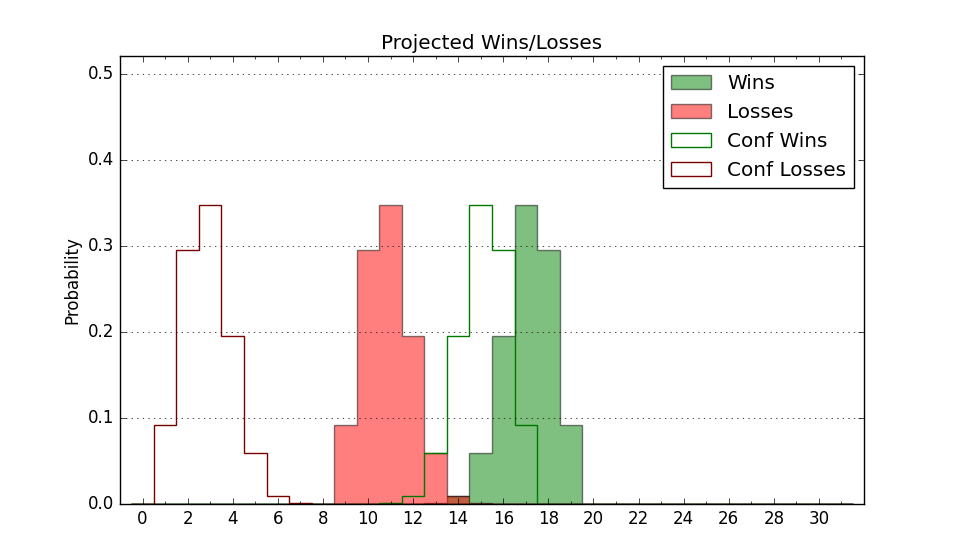

| Home | Game Probabilities | Conferences | Preseason Predictions | Odds Charts | NCAA Tournament |
| City: | Baton Rouge, Louisiana | |
| Conference: | Southwest (1st)
| |
| Record: | 10-1 (Conf) 12-9 (Overall) | |
| Ratings: | Comp.: -5.0 (219th) Net: -4.8 (217th) Off: 98.9 (292nd) Def: 103.7 (132nd) SoR: 0.0 (125th) |
| Remaining | ||||||
|---|---|---|---|---|---|---|
| Date | Opponent | Win Prob | Pred. | |||
| 2/15 | Prairie View A&M (339) | 87.9% | W 84-69 | |||
| 2/17 | Texas Southern (302) | 81.1% | W 75-65 | |||
| 2/22 | @ Grambling St. (319) | 61.1% | W 67-64 | |||
| 3/1 | @ Bethune Cookman (257) | 44.3% | L 68-69 | |||
| 3/3 | @ Florida A&M (330) | 63.4% | W 72-69 | |||
| 3/6 | Alabama St. (312) | 83.2% | W 78-67 | |||
| 3/8 | Alabama A&M (359) | 94.5% | W 84-63 | |||
| Previous | Game Score | |||||
| Date | Opponent | Win Prob | Result | Off | Def | Net |
| 11/4 | @South Dakota (236) | 38.7% | L 79-93 | -4.6 | -8.1 | -12.6 |
| 11/7 | @Iowa (63) | 7.2% | L 74-89 | 6.7 | -3.5 | 3.2 |
| 11/13 | @Texas A&M Commerce (324) | 62.4% | L 68-70 | -8.8 | -4.0 | -12.8 |
| 11/20 | @Texas A&M (18) | 2.3% | L 54-71 | -2.4 | 12.5 | 10.1 |
| 11/30 | @Louisiana Tech (120) | 17.3% | W 73-70 | 8.4 | 7.7 | 16.1 |
| 12/7 | @Tulsa (273) | 48.5% | W 70-66 | 8.4 | -2.9 | 5.5 |
| 12/17 | @Mississippi (26) | 2.9% | L 61-74 | 2.0 | 15.4 | 17.3 |
| 12/20 | @Loyola Marymount (131) | 19.7% | L 73-89 | 10.8 | -29.0 | -18.2 |
| 12/22 | @USC (55) | 6.2% | L 51-82 | -19.6 | 5.6 | -14.0 |
| 12/30 | @Nebraska (47) | 4.8% | L 43-77 | -21.5 | 1.5 | -19.9 |
| 1/4 | @Texas Southern (302) | 55.7% | W 67-58 | 0.6 | 14.0 | 14.6 |
| 1/6 | @Prairie View A&M (339) | 68.0% | W 84-80 | 1.1 | -3.8 | -2.8 |
| 1/11 | Florida A&M (330) | 85.5% | W 91-57 | 29.6 | 4.2 | 33.8 |
| 1/13 | Bethune Cookman (257) | 73.0% | W 69-53 | -5.6 | 17.0 | 11.4 |
| 1/18 | Grambling St. (319) | 84.2% | W 67-60 | -6.9 | -3.0 | -9.9 |
| 1/25 | @Arkansas Pine Bluff (363) | 87.7% | W 83-67 | -4.2 | 3.6 | -0.6 |
| 1/27 | @Mississippi Valley St. (364) | 97.0% | W 63-42 | -19.2 | 15.1 | -4.1 |
| 2/1 | Alcorn St. (317) | 84.0% | W 74-69 | -0.7 | -5.3 | -6.1 |
| 2/3 | Jackson St. (278) | 77.2% | W 91-89 | 12.8 | -14.8 | -1.9 |
| 2/8 | @Alabama A&M (359) | 83.4% | W 81-68 | 12.3 | -7.8 | 4.5 |
| 2/10 | @Alabama St. (312) | 59.3% | L 81-82 | 3.6 | -6.9 | -3.3 |
| Stats & Trends | |||||
|---|---|---|---|---|---|
| Current | Day | Week | Month | Season | |
| Composite | -5.0 | +0.1 | +0.4 | +0.6 | +5.5 |
| Comp Rank | 219 | -1 | +6 | +3 | +55 |
| Net Efficiency | -4.8 | +0.1 | +0.3 | -0.2 | -- |
| Net Rank | 217 | +2 | +5 | -4 | -- |
| Off Efficiency | 98.9 | +0.1 | +1.0 | -0.1 | -- |
| Off Rank | 292 | +2 | +16 | -13 | -- |
| Def Efficiency | 103.7 | -0.0 | -0.7 | -0.1 | -- |
| Def Rank | 132 | -1 | -10 | +6 | -- |
| SoS Rank | 257 | +5 | -29 | -219 | -- |
| Exp. Wins | 17.1 | +0.0 | -0.4 | +0.9 | +4.7 |
| Exp. Conf Wins | 15.1 | +0.0 | -0.4 | +0.9 | +4.5 |
| Conf Champ Prob | 92.2 | +0.2 | -1.9 | +27.8 | +72.5 |

| Advanced Stats | ||
|---|---|---|
| Stat | Value | Rank |
| Off Eff FG % | 0.462 | 322 |
| Off Ast Ratio | 0.124 | 312 |
| Off ORB% | 0.290 | 183 |
| Off TO Rate | 0.152 | 203 |
| Off FT Ratio | 0.369 | 86 |
| Def Eff FG % | 0.522 | 220 |
| Def Ast Ratio | 0.162 | 299 |
| Def ORB% | 0.298 | 232 |
| Def TO Rate | 0.177 | 45 |
| Def FT Ratio | 0.421 | 336 |